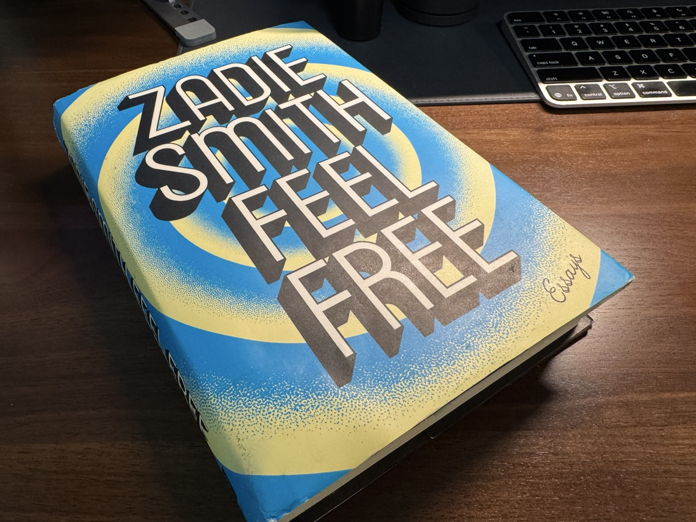

The I Who is Neither a Corpse nor Justin Bieber:
A Note to My Future Collaborators and Employers
14 September 2026

I recently read Zadie Smith’s Man Versus Corpse and Meet Justin Bieber! in one go. The result: I felt ever more propelled to write this note—not as a manifesto but more as a manual for those who intend to work with me and get the best possible outcome from that experience. At the opening of Meet Justin Bieber! Smith poses a question that I find unexpectedly apt for working in an organisation:
Does it still feel like being a person?
Alone, it reads a banal preface to a diatribe on modern workplace grievances. It can be, but that is not my point here. Its aptness is justified in a subtler way by our workplace patois: ‘You are an asset to the team.’ ‘I’d leave if I become a liability.’ This balance-sheet way of thinking epitomises the I-It attitude Buber describes in I and Thou. Objectifying a person, however one feels tempted to assert a moral judgement, is a first and fundamental step towards rational problem solving. With a workplace audience in mind, this note’s primary purpose is therefore not remonstrating against this practice—quite the opposite, it is about how you should do that objectification with me for your own interest. It warrants a note, precisely because people sometimes pick the wrong model. Here I provide an alternative, inspired by two modes of thinking that I constantly employ in my own research:
First, I am a human not a corpse, and a human has constraints: obviously bounded by physique and time, but also by idiosyncrasies which we typically call values. Optimising for a solution while ignoring these constraints solves the wrong problem. Working with me—and indeed, any human not corpse—is a constrained optimisation problem. Understanding the constraints and simplifying them may afford an efficient route towards an optimal solution, as in Paid with Models.
Second, as in any classic principal-agent problem, considerable asymmetric information exists before a collaboration commences. Alignment is often stressed as a desideratum but frequently gauged through stated preferences—lying or intentional withholding of information that proves convenient in the moment can impose exorbitant costs later on. Two classical responses to asymmetric information are signalling and screening, depending on which party moves first. This note attempts both: signalling to HR or contract designers something about my ‘type’ while screening future collaborators with whom we’re likely to have many I-Thou moments in research. (An I-Thou moment is an occasion where you encounter the other as a whole, irreducible presence—and it is what I consider to be true ‘alignment’: not agreement, but presence and acknowledgement. N.B. I use ‘alignment’ here in a deliberately different sense from its use in my P2P work, AI safety, and HCI.)
Having spent a rather embarrassing amount of space explaining why a note about my working style deserves to exist—and this, as an appendix to a webpage about ‘me’, feels all the more cringingly narcissistic—I am now beholden to say something substantive about myself. In fact, my simultaneous insistence on, and reluctance towards, making such a statement has already betrayed something about me. I harbour contradictions rather happily.
I attribute some of this to moving between cultures during my young adulthood, which has shaped my perspective on merit. Growing up in China, followed by years spent in Hong Kong and Britain, left me rather susceptible to the idea that merit is best noticed rather than announced. Time in New York taught me something almost exactly opposite: if you do not articulate your interests, constraints and ambitions, it is rather optimistic to expect somebody else—a stranger with limited bandwidth and priorities of their own—to infer them correctly. I have made no serious attempt to reconcile the two instincts but have maintained a working principle to separate self-advocacy from self-promotion.
Advocacy means speaking up where silence may cost you dearly. Promotion, in the sense that troubles me, means improving your own standing by distorting the information on which others act—whether by inflating your abilities or contribution, or, worse, by claiming agency or credit that properly belongs to someone else. The first misallocates attention and opportunity; the second does so by taking something from another person. This distinction also explains, at least partly, my absence from X, relative inactivity on LinkedIn, and general reluctance to participate in the rituals of professional self-promotion. The best basis for advocacy, to me, remains the work itself.
With that out of the way, let me turn to a few modelling (mis-)assumptions about me that you should heed when doing the constrained optimisation problem.
Assumption 1: my time is the constraint.
Not quite. For people who’ve observed my GitHub or Overleaf timestamps, I sometimes stay up late—or even, on some occasions like my MPhil thesis, pull an all-nighter—for things I consider intellectually consequential. I also demur relatively easily on things I consider performative and would rather spend the time drinking coffee or strolling around a park. The scarce resource isn’t hours alone but willing attention. I am not a believer in productivity theatre and certainly not in the notion that diligence is proportional to the time spent.
Assumption 2: I have pledged allegiance to an academic domain, and therefore approach problems with standard operating procedures.
Wrong. I do not identify as economist first, ML researcher first, statistician first, etc. I am problem-first. The solution concept is inspired by the problem rather than the domain: contract theory for incentive problems in collaborative machine learning, proxy-based modelling and statistical inference for AI-human alignment, game-theoretic analysis for AI bias and mitigation, or even mathematical proof by contradiction for dating a three-coloured Tang sancai figurine.
While I do not have a standard operating procedure for research, I do have a general-to-specific tendency—a habit I attribute in part to years of mentorship by David Hendry and Jennie Castle. This tendency is most evident in my recent project Prompts to Proxies (P2P), in which I begin by characterising existing paradigms for preference alignment and establishing the benefits of a new functional-basis approach before descending to its implementation in P2P. For collaboration, exploring together the problem—why it matters, what the pain points are, and how the existing solutions remain wanting—is indispensable and should happen early in the project. My way of leading a project follows this guideline closely.
Assumption 3: Values are first-class constraints in the optimisation problem.
True. This is essentially how I manage uncertainty in a project and a collaboration. I was once told by a colleague that our opinions do not matter, and I have since ceased collaboration with them. The reason is very simple: if what you say does not genuinely reflect your values or judgement, and you are unwilling to stand behind it, it would be rather strange to expect others to take either your words—or you—seriously. It returns to the ‘alignment’ concept I mentioned in the opening half of this note. Disagreement is something I deem natural and palatable in a collaboration, and if managed prudently has the potential to lead to fascinating results and unexpected understandings. What alignment requires instead is presence and acknowledgement. Presence means investment: you are not peripheral to the project, and you should not behave as though you were. Acknowledgement means recognising and respecting the differences and being transparent about the constraints. An important pillar of this is credit attribution: who did what when. Trust is not built on goodwill alone; it is built on fair records and aligned incentives.
Assumption 4: Judgement is secondary once the objective is agreed upon; what’s left is execution.
Wrong, and for a timely reason. With the advent of LLMs and coding agents, many research and professional tasks can now be automated, lowering execution costs. What remains is what is important: judgement. In this sense, I am not a ‘helpful assistant’—despite having completed several stints under the misleading title of ‘research assistant’—nor do I expect any of my collaborators to be one. Exercising judgement during execution means discovering a planned analysis doesn’t answer the question, evidence contradicts the working hypothesis, a benchmark is misleading, or even the project itself needs reframing. This happens to me constantly in active research. I also realise it may not be convenient for everyone—to be fair, research is not a convenient task. Judgement is a form of ownership, and ownership is what keeps a project alive when it needs time to crystallise.
Returning, finally, to the bewildering title and the two Smith pieces that inspired this note, I think it is reasonably safe to establish that I am not Justin Bieber: I possess neither his singing virtuosity—though I do attempt to sing as a hobby—nor his extraordinary popularity as a love object, though I remain rather invested in the more modest concept of camaraderie. The ‘not a corpse’ part deserves a less facetious explanation. In Man Versus Corpse, Smith casts light on the deceptively simple boundary between a person and their corpse: mourning, for instance, ‘insist[s] upon the reality of the once-living person’ rather than allowing that person to be ‘reduced to matter alone’. If so much effort is expended recovering the person once life has departed, the ‘premature corpsification’ of someone who is still very much alive seems all the more bizarre. Workplaces, if I may extend Smith rather liberally, are unusually capable of doing just that: turning people prematurely into labour, output, assets, liabilities, and cogs in a machine.
Smith’s encounter with Karl Ove Knausgård points in the other direction, towards what it means to be stubbornly alive: the mundane particulars, the ‘cathedral of boredom’, and, through it all, the struggle of living in the present—a beautiful one, though Knausgård apparently took six autobiographical novels to do it justice. Suffice it to say that I have neither the ambition nor, fortunately for the reader, the stamina of Knausgård. Nor is a complete model the purpose of this note. It is merely an attempt to make enough of the person legible that we might decide whether an actual encounter is worth having. Collaboration, for all the constraints, incentives, disagreements, and occasional inconveniences it entails, should ultimately be centred around the people, not the corpses. Model me when a model is useful, but if we do end up working together, I hope there will at least be moments when the model recedes—when presence and acknowledgement take its place, and it still feels like being a person.